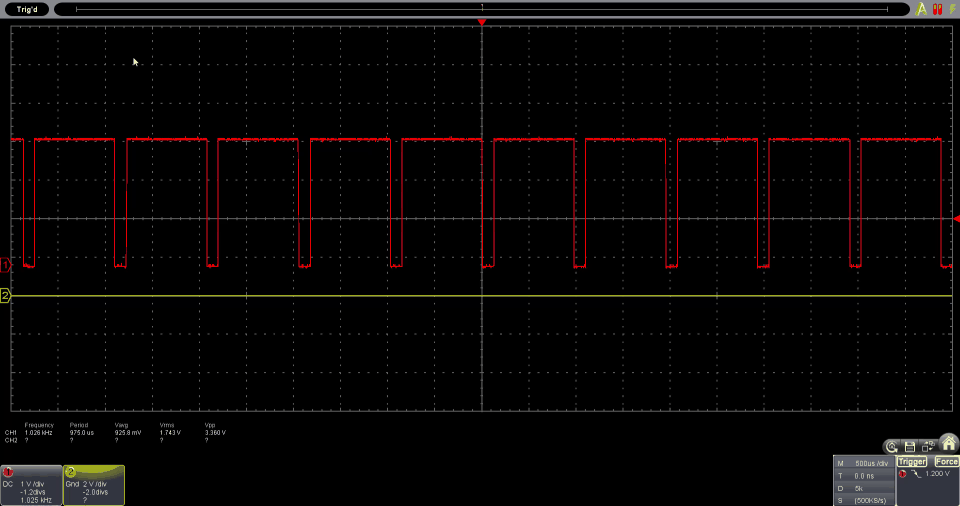
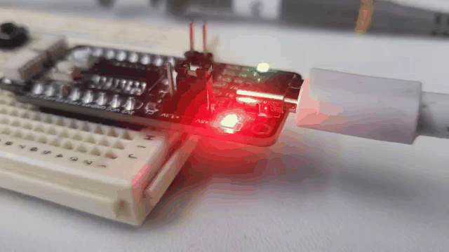
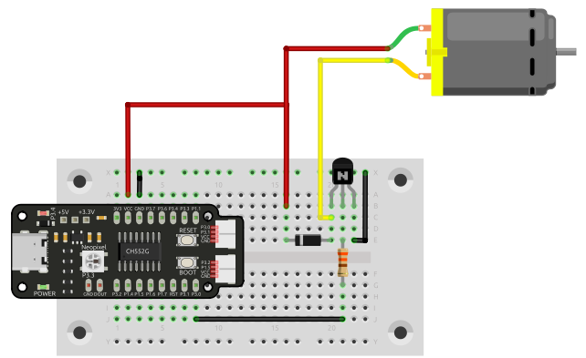

Modulación por ancho de pulso (PWM)#
La modulación por ancho de pulso (PWM) es una técnica utilizada para controlar la cantidad de energía entregada a un dispositivo. En los microcontroladores, el PWM se utiliza para controlar la velocidad de los motores, el brillo de los LEDs y más.
Advertencia
El soporte de ubicación para salidas PWM depende de la placa de desarrollo. Revisar la documentación de la placa para conocer los pines PWM disponibles.
{kind=link}

Implementación#
{kind=link}

Arduino IDE y SDCC#
#include <stdio.h>
#include "src/config.h"
#include "src/system.h"
#include "src/gpio.h"
#include "src/delay.h"
#include "src/pwm.h"
#define MIN_COUNTER 10
#define MAX_COUNTER 254
#define STEP_SIZE 10
void change_pwm(int hex_value)
{
PWM_write(PIN_PWM, hex_value);
}
void main(void)
{
CLK_config();
DLY_ms(5);
PWM_set_freq(1);
PIN_output(PIN_PWM);
PWM_start(PIN_PWM);
PWM_write(PIN_PWM, 0);
while (1)
{
for (int i = MIN_COUNTER; i < MAX_COUNTER; i+=STEP_SIZE)
{
change_pwm(i);
DLY_ms(20);
}
for (int i = MAX_COUNTER; i > MIN_COUNTER; i-=STEP_SIZE)
{
change_pwm(i);
DLY_ms(20);
}
}
}
#define led 34
int brightness = 0;
int fadeAmount = 5;
void setup() {
pinMode(led, OUTPUT);
}
void loop() {
analogWrite(led, brightness);
brightness = brightness + fadeAmount;
if (brightness <= 0 || brightness >= 255) {
fadeAmount = -fadeAmount;
}
delay(30);
}
Aplicaciones#
Controlador de velocidad de motor
{kind=link}

Figura 12 Controlador de velocidad de motor#